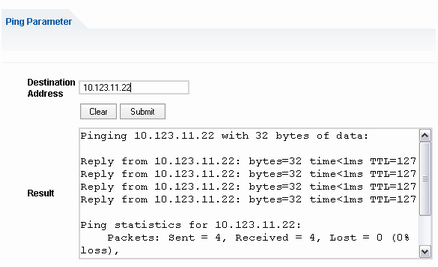

Ping Client
The "Ping Client" web page provides a ping utility to verify the connection between the instrument and another device.
The ping is initiated from the instrument. It uses the ICMP echo request and echo reply packets to determine whether the LAN connection to another device is functional. Ping is useful for diagnosing IP network or router failures.
To initiate a ping at the instrument:
On the "Ping Client" page, enter the IP address of the ping target into the "Destination Address" field (for example 10.123.11.22).
Click "Submit".
